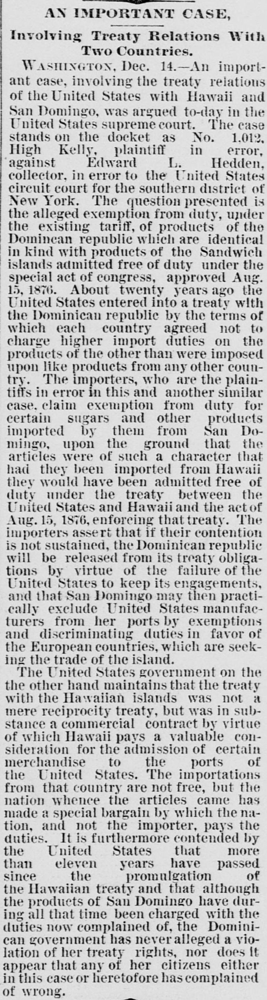
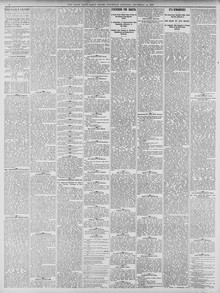

See the full pageVer la página completaAn Important Case.Un caso importante.
Importers of sugars and other products from San Domingo claimed exemption from United States import duties based on a treaty that prohibited either country from charging higher duties than those imposed on products from any other nation, comparing their case to the duty-free admission of Sandwich Islands products. The plaintiffs argued that failing to sustain their contention would release the Dominican Republic from its treaty obligations and potentially lead to discriminatory duties against United States manufacturers in favor of European countries. Conversely, the United States government maintained that the Hawaiian treaty was not a mere reciprocity treaty, but a commercial contract where Hawaii paid a valuable consideration for merchandise entry.Introductores de azúcares y otros frutos procedentes de Santo Domingo pretendieron la franquicia arancelaria en los Estados Unidos amparándose en un tratado que proscribía gravar sus efectos con derechos más onerosos que los aplicados a cualquier otra potencia, parangonando su pretensión a la entrada franca conferida a las producciones de las islas Sandwich. Alegaban los demandantes que desechar su pretensión exoneraría a la República Dominicana de sus deberes convencionales y provocaría aranceles de represalia contra las manufacturas estadounidenses en favor de las plazas europeas. Por contra, el gobierno de los Estados Unidos adujo que el convenio con Hawái no entrañaba un simple pacto recíproco, sino un contrato mercantil mediando valiosa contraprestación pecuniaria.
FULL TEXT:TRADUCCIÓN:
Involving Treaty Relations With Two Countries.Involucrando relaciones de tratado con dos países.
WASHINGTON, Dec. 14.—An important case, involving the treaty relations of the United States with Hawaii and San Domingo, was argued to-day in the United States supreme court. The case stands on the docket as No. 1,012, High Kelly, plaintiff in error, against Edward L. Hedden, collector, in error to the United States circuit court for the southern district of New York. The question presented is the alleged exemption from duty, under the existing tariff, of products of the Dominican republic which are identical in kind with products of the Sandwich islands admitted free of duty under the special act of congress, approved Aug. 15, 1876. About twenty years ago the United States entered into a treaty with the Dominican republic by the terms of which each country agreed not to charge higher import duties on the products of the other than were imposed upon like products from any other country. The importers, who are the plaintiffs in error in this and another similar case, claim exemption from duty for certain sugars and other products imported by them from San Domingo, upon the ground that the articles were of such a character that had they been imported from Hawaii they would have been admitted free of duty under the treaty between the United States and Hawaii and the act of Aug. 15, 1876, enforcing that treaty. The importers assert that if their contention is not sustained, the Dominican republic will be released from its treaty obligations by virtue of the failure of the United States to keep its engagements, and that San Domingo may then practically exclude United States manufacturers from her ports by exemptions and discriminating duties in favor of the European countries, which are seeking the trade of the island.WASHINGTON, 14 de diciembre.—Un caso importante, que involucra las relaciones de tratado de los Estados Unidos con Hawái y Santo Domingo, fue argumentado hoy en la corte suprema de los Estados Unidos. El caso figura en el registro como No. 1,012, High Kelly, demandante en error, contra Edward L. Hedden, recaudador, en error a la corte de circuito de los Estados Unidos para el distrito sur de Nueva York. La cuestión presentada es la alegada exención de derechos, bajo el arancel existente, de productos de la república dominicana que son idénticos en clase a productos de las islas Sandwich admitidos libres de derechos bajo la ley especial del congreso, aprobada el 15 de agosto de 1876. Hace unos veinte años los Estados Unidos entraron en un tratado con la república dominicana por cuyos términos cada país acordó no cobrar derechos de importación más altos sobre los productos del otro que los impuestos sobre productos similares de cualquier otro país. Los importadores, que son los demandantes en error en este y otro caso similar, reclaman exención de derechos para ciertos azúcares y otros productos importados por ellos desde Santo Domingo, bajo el fundamento de que los artículos eran de tal carácter que si hubieran sido importados desde Hawái habrían sido admitidos libres de derechos bajo el tratado entre los Estados Unidos y Hawái y la ley del 15 de agosto de 1876, que hace cumplir ese tratado. Los importadores afirman que si su contención no es sostenida, la república dominicana será liberada de sus obligaciones de tratado en virtud del fracaso de los Estados Unidos en cumplir sus compromisos, y que Santo Domingo puede entonces excluir prácticamente a los fabricantes de los Estados Unidos de sus puertos mediante exenciones y derechos discriminatorios en favor de los países europeos, que están buscando el comercio de la isla.
The United States government on the other hand maintains that the treaty with the Hawaiian islands was not a mere reciprocity treaty, but was in substance a commercial contract by virtue of which Hawaii pays a valuable consideration for the admission of certain merchandise to the ports of the United States. The importations from that country are not free, but the nation whence the articles came has made a special bargain by which the nation, and not the importer, pays the duties. It is furthermore contended by the United States that more than eleven years have passed since the promulgation of the Hawaiian treaty and that although the products of San Domingo have during all that time been charged with the duties now complained of, the Dominican government has never alleged a violation of her treaty rights, nor does it appear that any of her citizens either in this case or heretofore has complained of wrong.El gobierno de los Estados Unidos por otro lado mantiene que el tratado con las islas hawaianas no fue un mero tratado de reciprocidad, sino que fue en sustancia un contrato comercial en virtud del cual Hawái paga una valiosa consideración por la admisión de cierta mercancía a los puertos de los Estados Unidos. Las importaciones de ese país no son libres, pero la nación de donde vinieron los artículos ha hecho un trato especial por el cual la nación, y no el importador, paga los derechos. Se sostiene además por los Estados Unidos que más de once años han pasado desde la promulgación del tratado hawaiano y que aunque los productos de Santo Domingo han sido durante todo ese tiempo cobrados con los derechos ahora reclamados, el gobierno dominicano nunca ha alegado una violación de sus derechos de tratado, ni parece que ninguno de sus ciudadanos ni en este caso ni antes se haya quejado de agravio.
St. Paul Daily Globe. Saint Paul, Minn., December 15, 1887.
See the original at the Library of CongressVer el original en la Biblioteca del Congreso
Published by: St. Paul Globe Print. Co., 1884-1896.Publicado por: St. Paul Globe Print. Co., 1884-1896.
Edition: Edition 1Edición: edición 1
Page: 4Página: 4
Frequency: daily (1884–1896)Frecuencia: diario (1884–1896)
Collection: Chronicling America, Library of CongressColección: Chronicling America, de la Biblioteca del Congreso
LCCN: sn90059522LCCN: sn90059522
ISSN: 2168-0116ISSN: 2168-0116
OCLC: 1775208OCLC: 1775208
Rights: public domain, according to the Library of CongressDerechos: dominio público, según la Biblioteca del Congreso